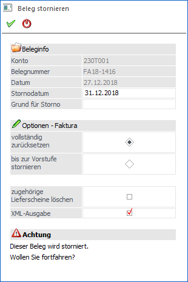
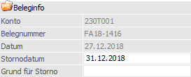
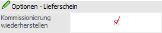
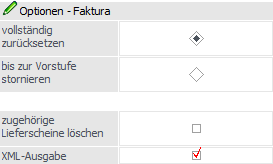

Erstellte Belege können in unterschiedlichen Bereichen gelöscht bzw. storniert werden. Hierbei erhält der generierte Storno-Beleg immer die nächste freie Belegnummer lt. Belegart (seit Version 8.1).
ü Belege erfassen
ü Button "Beleg löschen"
ü Telesales
ü Button "Beleg löschen"
ü Belegmanagement
ü Aktions-Button "Belegstorno"
ü Per rechter Maustaste Funktion "Beleg xxx stornieren" bzw. "Beleg xxx löschen"
ü Belege / Belege - Matchcode
ü Aktions-Button "Belegstorno"
ü Per rechter Maustaste Funktion "Beleg xxx stornieren" bzw. "Beleg xxx löschen"
ü Belegumstellung (im Schritt 3 von 3)
ü Tabellenbutton "Beleg löschen"
ü Per rechter Maustaste Funktion "Beleg xxx stornieren" bzw. "Beleg xxx löschen"
Hinweis
Das Fenster "Beleg stornieren", in welchem Eingaben für den Stornovorgang hinterlegt werden können, öffnet sich beim Storno per Belegmanagement bzw. Belege und bei der Stornierung per Belegumstellung (via rechter Maustaste) automatisch. Für die Darstellung des Fensters im Bereich "Belege erfassen" und "Telesales" muss in den FAKT-Parametern die Option "Fragen bei Auswahl im Erfassen" (WinLine START - Parameter - Applikationsparameter - FAKT-Parameter - Belege - Belegstorno) aktiviert werden. Bei einem Storno ohne "Beleg stornieren"-Fenster wird der Storno aufgrund der FAKT-Parameter-Einstellungen durchgeführt.
Achtung
Angebote werden gelöscht und nicht storniert. Aus diesem Grund wird das Fenster "Beleg stornieren" bei solchen Belegen nie geöffnet.

Beleginfo

Ø Konto
An dieser Stelle wird die Kontonummer aus dem zu stornierenden Beleg angezeigt.
Ø Belegnummer
Hier wird die Belegnummer des zu stornierenden Beleges angezeigt.
Ø Datum
An dieser Stelle wird das Belegdatum des zu stornierenden Beleges angezeigt.
Ø Stornodatum
Gemäß der FAKT-Parameter-Option "Datum" (WinLine START - Parameter - Applikationsparameter - FAKT-Parameter - Belege - Belegstorno - Datum) wird an dieser Stelle das Tagesdatum bzw. das Belegdatum als Belegdatum für den Stornobeleg vorgeschlagen.
Achtung
Das Datum des Stornos ist vor allem für das Stornieren von Lieferscheinen und Fakturen relevant. Bei Lieferscheinen wird das Lager mit dem jeweiligen Datum korrigiert, was ausschlaggebend für die Einstandspreisbildung bei einer Lagerneubewertung sein kann.
Bei Fakturen werden zusätzlich die Statistik, die Vertreterabrechnung und die Finanzbuchhaltung mit dem jeweiligen Datum korrigiert (auch das Artikeljournal, wenn der Lieferschein mit storniert wird).
Hinweis
Wird ein Beleg storniert, welcher eine vom Datum abweichende Periode hinterlegt hat, so bleibt diese abweichende Periode auch im Stornobeleg erhalten, wenn dieser mit der Option "Belegdatum" storniert wird. Sollte für den Stornobeleg die Option "Tagesdatum" verwendet werden, so wird die zum Tagesdatum zugehörige Periode herangezogen.
Ø Grund für Storno
An dieser Stelle kann ein Stornogrund angegeben werden (maximal 100 Zeichen), welcher in dem erzeugten Stornobeleg abgespeichert wird.
Optionen - Lieferschein

Handelt es sich bei dem zu stornierenden Beleg um einen Lieferschein, so steht ggfs. folgende Option zur Verfügung:
Ø Kommissionierung wiederherstellen?
Wird ein Lieferschein storniert, zu welchem es Kommissionierungszeilen bzw. Verpackungszeilen gibt, dann besteht mit Hilfe dieser Option die Möglichkeit diese Kommissionierungen "wiederherzustellen".
Hinweis
Bei Aktivierung der Option werden auch das Packlistenkennzeichen und die erfassten Liefermengen wiederhergestellt, es sei denn, es handelt sich um Ausprägungen, welche erst im "Kundenbestellungen bearbeiten" aufgeteilt wurden. In diesem Fall kann die Verpackung und die Aufteilung nicht wiederhergestellt werden. Wurden die Ausprägungen bereits im Auftrag aufgeteilt oder die Aufteilung ist erst nach der Kommissionierung erfolgt, kann eine Wiederherstellung erfolgen.
Optionen - Faktura

Handelt es sich bei dem zu stornierenden Beleg um eine Faktura, so stehen ggfs. folgende Optionen zur Verfügung:
Ø vollständig zurücksetzen / bis zur Vorstufe stornieren
Bei der Stornierung einer Faktura kann entscheiden werden, ob nur die Faktura (Option "bis zur Vorstufe stornieren") oder der gesamte Vorgang (Option "vollständig zurücksetzen") storniert werden soll.
Hierbei findet aufgrund der FAKT-Parameter-Option "Fakturen werden" (WinLine START - Parameter - Applikationsparameter - FAKT-Parameter - Belege - Belegstorno - Fakturen werden) eine Vorbesetzung statt.
Hinweis
Ob Vorstufen wieder aktiv werden ist abhängig davon, in welchen Belegstufen der Beleg zuvor bearbeitet wurde. Sammelfakturen, die auf Artikel kumuliert wurden, können nur vollständig und bis zur Vorstufe storniert werden!
Wurde nachträglich auf eine Einkaufssammelfaktura über den Menüpunkt "Lieferantenlieferungen aufteilen" Bezugsnebenkosten bzw. Hauptartikel aufgeteilt, so kann diese ebenfalls nur vollständig zurückgesetzt werden.
Ø zugehörige Lieferscheine löschen
Durch Aktivieren dieser Option können im Zuge des Stornierens einer Sammelfaktura die zugehörigen Lieferscheine mit dem Status "gelöscht" (LLLL) versehen werden. Folgende Voraussetzungen sind hierfür Grundvoraussetzung:
ü Die Sammelfaktura wurde nicht mit der Option "Artikel kumulieren" erstellt.
ü Die Sammelfaktura soll vollständig zurückgesetzt werden.
Ø XML-Ausgabe
Handelt es sich bei dem zu stornierenden Beleg um einen Beleg, welcher mit Hilfe der E-Billing-Funktion bereits exportiert wurde, so wird die Option "XML-Ausgabe" zur Verfügung gestellt.
Ist diese Option aktiviert (Standardeinstellung), so kann der Stornobeleg anschließend über die E-Billing-Funktion ausgegeben werden. Wird die Option hingegen deaktiviert, so wird die Option zur XML-Ausgabe im Stornobeleg nicht gesetzt. In der weiteren Folge steht der Stornobeleg somit für eine E-Billing-Ausgabe nicht zur Verfügung.
Auswirkungen
Je nach Belegstufe, aus welcher der zu stornierende Beleg stammt, verhält sich der Stornierungsvorgang unterschiedlich:
ü Angebot / Anfrage
Angebote
werden immer komplett gelöscht.
ü Auftrag / Bestellung
Wird ein
Auftrag storniert, dann wird immer ein nicht gerechneter / nicht gedruckter
Beleg erzeugt, der in einer beliebigen Belegstufe bearbeitet werden kann.
ü Auftrag / Bestellung mit
Teillieferscheinen
Wird ein Auftrag storniert, für welchen bereits
Teillieferscheine erfasst wurden, erscheint zusätzlich die Abfrage, ob wirklich
storniert werden soll. Wenn die Abfrage mit "Ja" bestätigt wird, werden sowohl
der Auftrag als auch die Teillieferscheine storniert und es gibt einen nicht
gerechneten / nicht gedruckten Beleg der in einer beliebigen Belegstufe
bearbeitet werden kann. Bei "Nein" findet kein Storno statt.
ü Auftrag mit
Kommissionierungszeilen
Wird ein Auftrag storniert, für welchen es bereits
Kommissionierungszeilen gibt, so werden diese und auch die zugehörigen
Verpackungszeilen, gelöscht.
ü Bestellung mit
Umbuchungsanforderung
Bei dem Storno einer Lieferantenbestellung mit einer
verknüpften Umbuchungsanforderung (z.B. für einen Verweisartikel, der die
Lagerausprägung eines Fremdfertigers darstellt) wird eine Meldung ausgegeben, ob
die bestehenden Umbuchungsanforderungen ebenfalls gelöscht werden sollen. Wird
diese Abfrage mit "Ja" bestätigt, so werden sowohl die Dispositionszeile
"Einkaufsbestellung" als auch die zugehörige Zeile "Umbuchungsanforderung"
gelöscht. Hierbei wird auch das Kennzeichen gelöscht, dass der Bedarf von einem
anderen Artikel stammt, d.h. wird die stornierte Lieferantenbestellung, welche
dann als nicht gerechneter / nicht gedruckter Beleg vorhanden ist, nochmals
gedruckt, wird nur eine Einkaufs-Dispositionszeile ohne Verweis erzeugt.
ü Lieferschein / Teillieferschein /
L.Lieferschein / L.Teillieferschein
Wenn der Lieferschein zuvor in der Stufe
"Auftrag" bearbeitet wurde, wird der Auftrag wieder aktiv (unabhängig von der
Einstellung "Fakturen werden" in den FAKT-Parametern). Dasselbe gilt für einen
Teillieferschein.
Wenn zuvor kein Auftrag gedruckt wurde, wird aus dem
Lieferschein ein nicht gerechneter / nicht gedruckter Beleg, welcher in einer
beliebigen Belegstufe bearbeitet werden kann.
ü Lieferschein mit
Kommissionierungszeilen bzw. Verpackungszeilen
Wird ein Lieferschein
storniert, zu welchem es Kommissionierungszeilen bzw. Verpackungszeilen gibt,
dann besteht die Möglichkeit diese Kommissionierungen "wiederherzustellen"
(siehe Option " Kommissionierung wiederherstellen?").
ü Faktura / L.Faktura
Bei dem
Storno einer Faktura wird auf die Einstellung in den Fakt-Parametern bezüglich
der Vorstufen zurückgegriffen (siehe Option " vollständig zurücksetzen / bis zur
Vorstufe stornieren"). Wurde eingestellt, dass Fakturen vollständig
zurückgesetzt werden sollen, dann entsteht durch das Storno ein nicht
gerechneter / nicht gedruckter Beleg, welcher in einer beliebigen Belegstufe
bearbeitet werden kann.
Bei der Einstellung "bis zur Vorstufe stornieren"
wird entweder der Lieferschein oder der Auftrag wieder aktiv (je nachdem, ob es
einen Lieferschein gegeben hat oder nicht). Hat es nur ein Angebot gegeben, dann
entsteht ein nicht gerechneter / nicht gedruckter Beleg.
Beim Belegstorno
in der WinLine FAKT wird die ursprüngliche Belegnummer mit angehängtem "-" in
die OP-Tabelle des FAKT-Buchungsstapels übernommen, damit wird der Storno-OP in
der FIBU automatisch gegen den ursprünglichen OP ausgeglichen, wenn die Beträge
übereinstimmen. Die Vergabe der neuen Belegnummer in der FAKT und in der
FIBU-Buchung bleibt unverändert.
Buttons
Ø Ja
Bei Anwahl des Buttons "Ja" bzw. der Taste F5 wird der Stornovorgang durchgeführt.
Ø Nein
Durch Anwahl des Buttons "Nein" bzw. der Taste ESC wird das Fenster geschlossen und der Stornovorgang nicht durchgeführt.